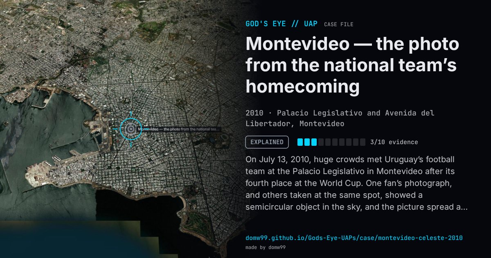

Montevideo — the photo from the national team’s homecoming

On July 13, 2010, huge crowds met Uruguay’s football team at the Palacio Legislativo in Montevideo after its fourth place at the World Cup. One fan’s photograph, and others taken at the same spot, showed a semicircular object in the sky, and the picture spread as a UFO. The Uruguayan Air Force’s commission for UFO reports, CRIDOVNI, examined it and reported on July 28: it put the chance of fraud by the photographer or anyone else, and of a psychological effect, at zero, but gave a 97% probability to a conventional object, something like a piece of nylon, paper or cloth lifted by the rising air currents over Avenida del Libertador. No one who had seen the object itself came forward.
Explanation
The Uruguayan Air Force’s commission CRIDOVNI found the photographs genuine but rated a conventional cause 97% likely: a light object such as nylon, paper or cloth carried up by rising air over the avenue, with no one having seen anything at the time.
What was seen
Shape: A semicircular object in the sky
Witnesses: Fans who photographed the celebration; no direct witness of the object came forward
Duration: Unknown (found in photographs)
Sources
Browse
- Uruguay
- 2010s
- Explained
- Photo and video cases
- Official government documents
- Photographs
- Spheres and orbs